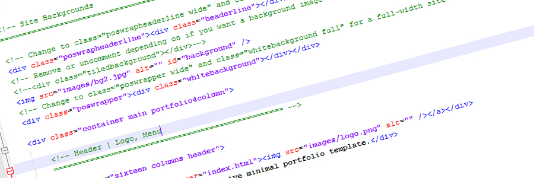
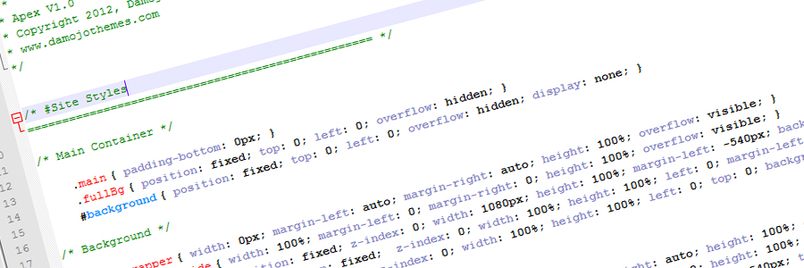
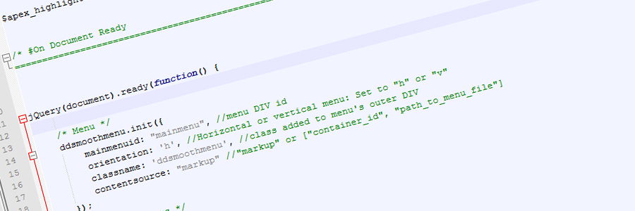
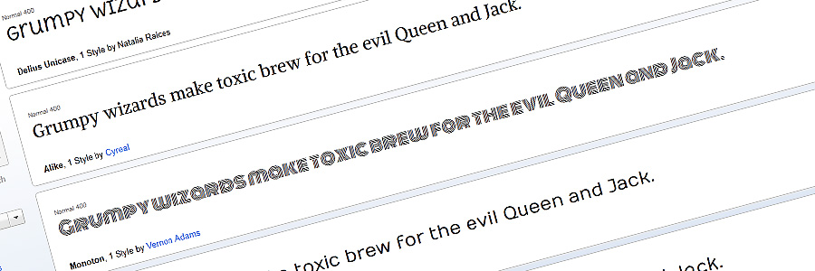
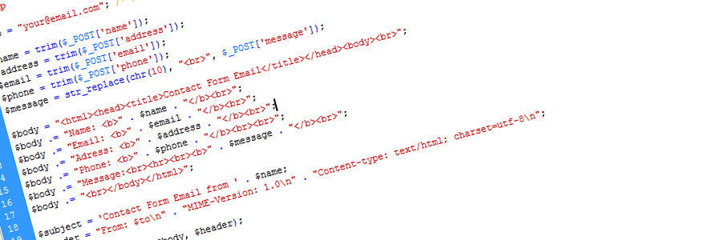

“Crunchy Responsive Creative Template” Documentation by “Damojo” v1.0
“Crunchy Responsive Creative Template”
Thank you for purchasing my template. If you have any questions that are beyond the scope of this help file, please feel free to email via my user page contact form here. Thanks so much!
Table of Contents
- HTML Structure
- CSS Files and Structure
- JavaScript
- Google Fonts
- PHP Code Explanation
- Sources and Credits
A) HTML Structure - top

(Important!) You bought a static HTML template. The search, comments, blog pagination and everything which is a WordPress functionality does not work in this template. If you need the WordPress version of this template with an admin system you can get it here.
The template has 16 different layout pages which, all with their own features and purposes. In the following section I will talk about each available page in detail:
Highlight Color
- If you want to switch the template color scheme to any color open css/screen.css and css/base.css with any editor program like notepad++ or dreamweaver
- Do a search and replace (ctrl + f) and replace "#ffc539" (default yellow) with you target color
- Another file you need to change is the js/screen.js where you can change the effect color via a parameter on top of the file.
Backgrounds
- In every html page you will find the "Site Backgrounds" code comment below which you can do all changes regarding the page background.
- If you want to use a fullsize background image for a page, simply change the image path.
- Remove the background image line and the code comments around the tiledbackground div if you want a tiled background. The background tile can be specified in the css/screen.css ".tiledbackground" class.
Header, Footer Layout
- In order to set the layout options seen in the item preview, you need to switch around a few css classes on each page.
- What you need to do in order to change the header layout from column to wide is explained in the code comments below the "Site Backgrounds" part on each page.
- The same applies for the "Footer" and "Subfooter" code comments closer to the bottom of each page.
Home pages
- There are 4 different example home page layouts.
index.html
The full feature homepage layout.index_alternative.html
Another homepage layout example with filterable portfolio.index_noslider.html
Homepage example with vimeo video instead of slider.- For slider configuration help see here JavaScript
Content pages
- There are 7 content page examples.
s
page_shortcodes.html
An example page with tabs, accordions, pricing tables, videos and lightbox thumbs.page_clients.html
The clients page with a text block on top.page_full.html
A full-width content page with column/typography examples.page_sidebar_left.html
A content page with sidebar with column/typography examples.page_sidebar_right.html
A content page with sidebar with column/typography examples.
Portfolio Pages
- There are 2 pages included that are related to the portfolio.
portfolio_4column.html
A 4 column portfolio overview page.portfolio_1column_full.html
A blog-like 1 column portfolio overview page.portfolio_single.html
A single portfolio page with slideshow.
Blog Pages
blog_overview.html
The blog overview page with examples for blogposts with image, slideshow, youtube, vimeo and audio.blog_single.html
A single blogpost page with a slideshow example.blog_overview_full.html
A full blog overview page with no sidebar.blog_single_full.html
A single full blogpost page with a slideshow example.
Contact page
- The contact page.
contact.html
- Featuring a google map and text area. Google map configuration is described here: JavaScript. The contact form on this page is fully functional (For configuration please see PHP Code Explanation)
B) CSS Files and Structure - top

There are 2 CSS files used in this template which are relevant for style changes and modifications.
Main CSS File:
css/screen.css
Contains most of the page and layout related template styles.css/base.css
Contains basic styles like fonts, forms, buttons, links styles, etc.
General Info
- The other css files are reset.css which contains basic browser reset styles, skeleton.css which contains responsive related basic skeleton styles.
- If you would like to edit a specific section of the site, simply find the appropriate label in the CSS file, and then scroll down until you find the appropriate style that needs to be edited.
C) JavaScript - top

Only one of the templates javascript files is relevant for customization which is the js/screen.js. In this section I will go over all the important customization options of the individual javascript.
Portfolio 4 Column effect
- This is done below this comment:
/* Portfolio 4 Column */
- You can set the animation speed of the portfolio in milliseconds.
- The only option is 4 rows, please don't attempt to change that.
- Setting the "nonSelectedAlpha" value to 0 will cause the portfolio items to fadeout completely when filtering. Setting a value between 1 and 100 will create the opacity effect as seen in the 4-column portfolio of the demo.
Slider
- This is done below this comment:
/* Init FlexSlider */
- Changeable settings: slideshowSpeed, animationDuration, randomize
Twitter Feed
Google Maps
- This is configured in the contact.html at the very bottom.
/* Google Maps Init */
- You can set the desired longitute and latitude (Use a tool like this: http://universimmedia.pagesperso-orange.fr/geo/loc.htm)
- Zoom factors and hover title can also be set.
D) Google Fonts - top

The template uses no additonal google web fonts but you can add fonts if needed.
In the Google Web Font Directory you can choose different fonts and add the code to the header of each page.
E) PHP Code Explanation - top

There are 2 PHP files included: php/contact.php and php/quickcontact.php.
The first is used for the contact form on the contact page. At the top you can add your email the contact page mails should be send to. As the mail is send as an HTML mail you can slo customize the appearance of the html body.
The quickcontact.php is used for the quickcontact widget in the footer at the bottom of each page. Also add the recieving email address at the top.
Note: In order to send emails via the forms you need a PHP compatible Server with the mail function allowed!
F) Sources and Credits - top
I've used the following images, icons or other files as listed.
Once again, thank you so much for purchasing this template. As I said at the beginning, I'd be glad to help you if you have any questions relating to this template. No guarantees, but I'll do my best to assist. If you have a more general question relating to the themes on ThemeForest, you might consider visiting the forums and asking your question in the "Item Discussion" section.
Thanks for your Purchase, Damojo
Go To Table of Contents